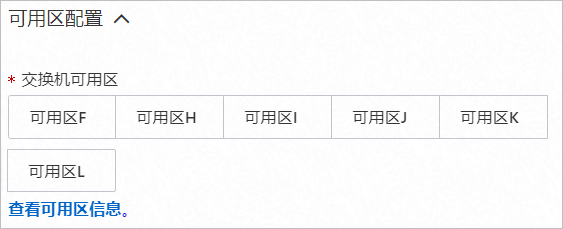
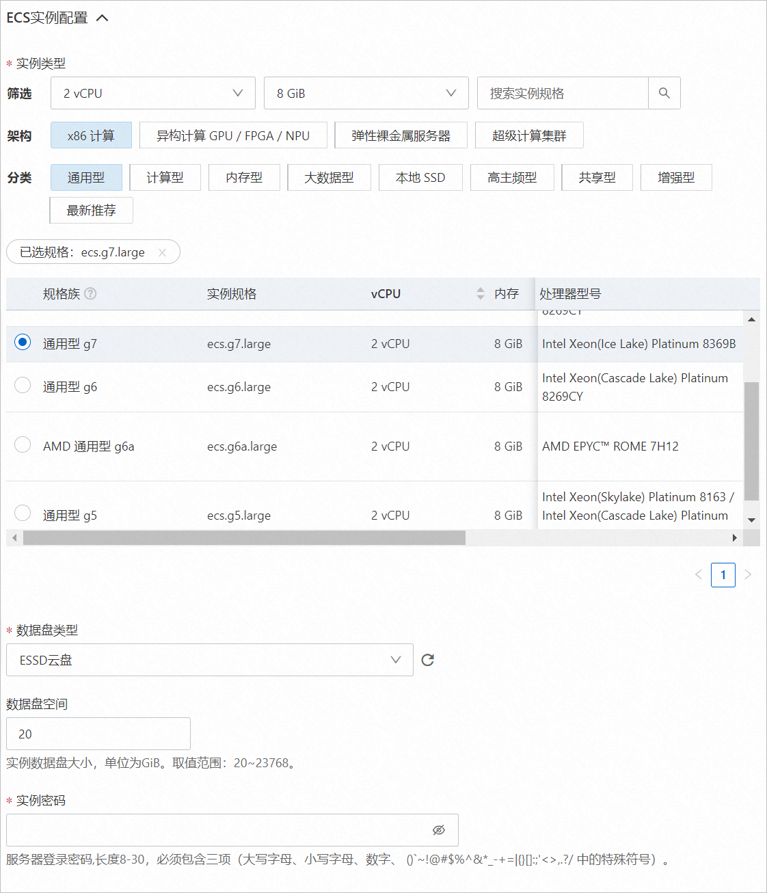
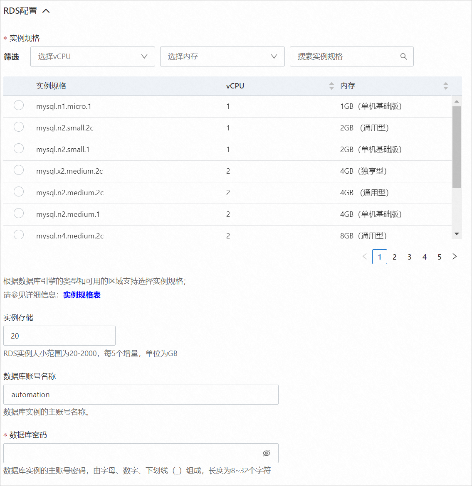

Bio-Research服务实例部署文档
概述
Bio-Research系统不同于传统生物药MES系统，它充分考虑了生物药生产过程的特性，将生产、实验和质控等数据统一在一个平台上，保证了系统合规和数据记录的完整性和一致性，减少了计算机系统验证的难度，提升了企业的管理精度、生产效率、质量水平。本文向您介绍如何部署Bio-Research服务实例。
RAM用户所需权限
Bio-Research服务需要对ECS、VPC、OSS等资源进行访问和创建操作，若您使用RAM用户创建服务实例，需要在创建服务实例前，对使用的RAM用户的账号添加相应资源的权限。添加RAM权限的详细操作，请参见为RAM用户授权。
需要添加的权限如下表所示。
| 权限策略名称 | 备注 |
|---|---|
| AliyunECSFullAccess | 管理云服务器服务（ECS）的权限。 |
| AliyunVPCFullAccess | 管理专有网络（VPC）的权限。 |
| AliyunOSSFullAccess | 管理对象存储服务（OSS）权限。 |
Bio-Research服务资源配置
默认配置
-
1台2 vCPU 8 GiB的实例。
-
系统盘空间40 GiB。
推荐配置
-
1台4 vCPU 16 GiB的实例。
-
系统盘类型为cloud_essd。
-
系统盘空间60 GiB。
限制条件
系统盘空间不少于40 GiB。
部署流程
部署步骤
部署参数说明
您可以通过服务商在计算巢中发布的服务，一键部署阿里云资源和服务商提供的软件。在创建服务实例的过程中，需要配置服务实例信息，下文介绍Bio-Research服务实例需要配置的详细参数。
- 地域
请结合实际情况选择合适的地域。当前仅华北2（北京）可选。
- 可用区配置
选择新建ECS实例的可用区。 
- 选择已有基础资源配置
-
专有网络VPC实例ID：根据实际情况，选择合适的现有虚拟专有网络的实例ID。
-
交换机实例ID：根据实际情况，选择合适的现有业务网络交换机的实例ID。
-
ECS实例配置
根据配置界面提示，选择合适的参数。ECS实例推荐选择2 vCPU 8 GiB及以上的实例类型。
- RDS配置
根据配置界面提示，选择合适的参数。RDS实例推荐选择2 vCPU 8 GiB及以上的实例类型。
- 付费类型配置
选择ECS实例的付费类型。可选值： * 按量付费
- 包年包月
© 2009-2022 Aliyun.com 版权所有